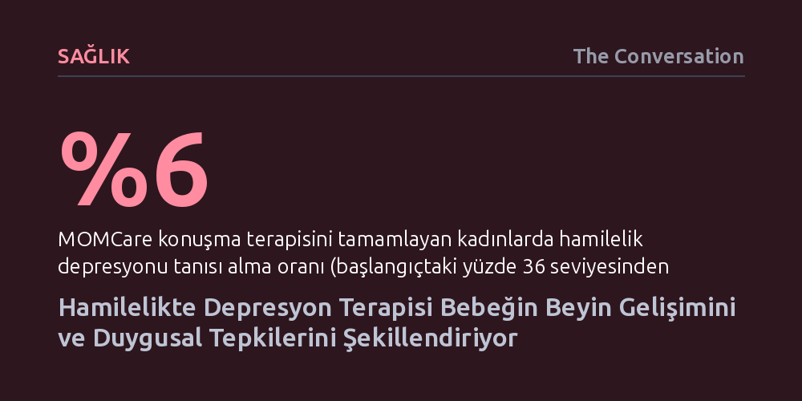

SAGLIK · The Conversation · 2026-10-17
Hamilelik sırasında uygulanan sekiz seanslık konuşma terapisi, annenin depresyonunu hafifletirken bebeklerin beyin gelişimini değiştirerek duygusal tepkilerini dengeliyor. Tedavi gören annelerin bebeklerinde hipokampus hacminin daha kontrollü geliştiği ve stres tepkilerinin azaldığı saptandı.
Hamilelikteki ruh sağlığı desteğinin yalnızca anneyi iyileştirmekle kalmayıp doğacak çocuğun beyin yapısını ve gelecekteki duygusal dayanıklılığını da biyolojik düzeyde şekillendirdiğini gösterir.

Hamilelik dönemi, her beş kadından birinin klinik düzeyde depresyon belirtileriyle karşılaştığı hassas bir süreçtir. Bu tablo yalnızca annenin gündelik yaşam kalitesini düşürmekle kalmaz; yüksek tansiyon ve erken doğum gibi ciddi gebelik komplikasyonlarının görülme olasılığını da artırır. Dahası, doğum öncesinde tedavi edilmeyen depresyonun, doğacak çocuğun ilerleyen yaşlarda psikiyatrik rahatsızlıklara yakalanma riskini yükselttiği uzun süredir bilinmektedir.
Nature Communications dergisinde yayımlanan yeni bir araştırma, bu döngünün kısa süreli ve hedef odaklı bir psikoterapiyle kırılabileceğini gösterdi. MOMCare adı verilen ve hamilelik depresyonuna özel olarak tasarlanan program; çatışmaları azaltmaya, sosyal desteği güçlendirmeye ve kişilerarası iletişim becerilerini geliştirmeye odaklanan sekiz adet 50 dakikalık seansı kapsıyor. Çalışmaya gebeliklerinin ilk veya ikinci üç aylık döneminde depresyon belirtisi gösteren 234 kadın dahil edildi.
Araştırmacılar, MOMCare uygulanan grupta klinik depresyon tanısı alma oranının yüzde 36'dan yüzde 6'ya gerilediğini ve bebeklerin zamanında doğma oranının belirgin şekilde yükseldiğini belirledi. Ancak çalışmanın asıl çığır açıcı yönü, annenin gördüğü psikolojik desteğin henüz doğmamış bebeğin beyin mimarisine doğrudan yansıdığını kanıtlamış olmasıdır.
Araştırma ekibi, bebeklerin doğumundan birkaç hafta sonra manyetik rezonans görüntüleme (MR) yöntemiyle beyin yapılarını ayrıntılı biçimde inceledi. Yapılan ölçümlerde özellikle öğrenme, hafıza ve duygu kontrolünde merkezi bir rol üstlenen hipokampus bölgesinin hacmi karşılaştırıldı. Sonuçlar çarpıcıydı: MOMCare terapisi alan annelerin bebeklerinde hipokampus hacmi, kontrol grubundaki annelerin bebeklerine kıyasla yüzde 5 daha küçüktü.
Bu anatomik farkın bebeğin davranışlarına nasıl yansıdığını anlamak isteyen araştırmacılar, bebekler altı aylık olduklarında onları laboratuvarda kontrollü bir teste tabi tuttu. Öngörülemeyen hareketler yapan, dans eden ve ses çıkaran bir oyuncak robotla karşılaşan bebeklerin duygusal tepkileri ölçüldü. Doğumda hipokampusu daha küçük ölçülen bebeklerin, bu bilinmedik ve stresli duruma karşı çok daha az olumsuz tepki verdikleri ve duygusal olarak daha dengeli kaldıkları gözlemlendi.
Yetişkin nörolojisinde beyin hacminin azalması çoğunlukla bilişsel gerileme veya olumsuz tablolarla bağdaştırıldığından, bebeklerde daha küçük bir hipokampusun daha güçlü duygu kontrolü sağlaması sezgilere aykırı gelebilir. Ne var ki erken gelişim evrelerinde büyüme dinamikleri yetişkinlerden tamamen farklıdır ve hızlı büyüme her zaman sağlıklı bir olgunlaşma anlamına gelmez.
Gelişimsel nörobiyolojide öne çıkan bir yaklaşıma göre, 'stres erken beyin gelişimini hızlandırabilir'. Anne karnında yoğun stres hormonlarına veya sistemik iltihaplanmaya maruz kalan bir fetusun beyni, kendisini erken olgunlaşmaya zorlayarak savunma mekanizmalarını aceleyle kurar. Hamilelikteki depresyon konuşma terapisiyle hafifletildiğinde ise rahim içi stres ortamı ortadan kalkar; bebeğin beyni zamansız bir olgunlaşma baskısından kurtularak doğal, dengeli ve sağlıklı bir büyüme temposuna kavuşur.
Hamilelik, kadınların sağlık sistemiyle hayatlarının diğer dönemlerine göre en sık ve düzenli temas kurduğu istisnai bir dönemdir. Sekiz seanslık konuşma terapisi gibi ilaç içermeyen, invaziv olmayan ve düşük maliyetli bir müdahalenin hem anneyi hem de doğacak çocuğu aynı anda koruyabilmesi, kamu sağlığı stratejileri için büyük bir fırsat sunmaktadır. Doğum öncesi ruh sağlığı taramalarını ve psikoterapi erişimini rutin bakımın parçası haline getirmek, iki neslin sağlığını birden güvenceye alabilir.
Bununla birlikte çalışmanın henüz yanıtlayamadığı bazı önemli sorular bulunmaktadır. Annenin ruh halindeki düzelmenin bebeğin beynine hangi hormonal veya hücresel yollarla aktarıldığı tam olarak aydınlatılabilmiş değildir. Araştırmacılar, çocukları ergenlik dönemine kadar izleyerek bebeklikte tespit edilen bu yapısal değişimin ilerleyen yaşlarda anksiyete ve depresyon riskini ne ölçüde düşürdüğünü uzun vadeli verilerle ortaya koymayı hedeflemektedir.